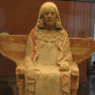

Escultura ibérica
(Haz clic en las imágenes para verlas con más detalle. Hacer clic una segunda vez permite verlas con aún más detalle.)
Dama de Elche
La dama de Elche (o Dama d'Elx en catalán) fue descubierta en el año 1897 en el pueblo de Elche (o Elx) en la provincia de Alicante en la costa oriental de España y puede verse en el Museo Arqueológico Nacional. (Hay una réplica bastante fiel en la biblioteca de la Casa Hispánica.) Sobre su origen cultural y datación hay vivas polémicas. En general se acepta que es una obra autóctona de la Península Ibérica esculpida entre los siglos IV y I a.C. Puede ser una imagen de la diosa cartaginesa Tanit, diosa de la luna y de la fecundidad, deidad traída a las costas occidentales del Mediterráneo por los fenicios. (Fue muy venerada en la Península como atestiguan las numerosas estatuillas halladas de la diosa.) |
|
En su estado actual, la Dama de Elche es un busto; es posible que se haya perdido la parte inferior de la escultura. Hay también restos de policromía que no se ve en la imagen. Las ruedas que lleva en la cabeza se suponen características de la indumentaria femenina ibera. Recientemente se ha puesto en tela de juicio la autenticidad de la escultura con alegaciones de que es una falsificación de finales del siglo XIX. El Museo Arqueológico Nacional y otros expertos no obstante afirman que es auténtica. Éstos se basan en el argumento, entre otros, de que ciertos rasgos de la estatua que no tenían precedente cuando se descubrió, como las joyas, se han visto confirmados en hallazgos posteriores que sí son auténticos sin lugar a dudas. Uno de estos hallazgos posteriores es la Dama de Baza. |
|
{kind=link}
Dama de Baza
La estatua conocida por el nombre de Dama de Baza se halló en 1971 cerca de Baza en la provincia de Granada. Se data en el siglo IV a.C. Mide unos 130 x 105 cm. (algo más de 4 pies de alto por tres y medio de ancho en la espalda del trono). Está sentada sobre un trono con alas anchas y pies de león. En la mano sostiene un pequeño pájaro. Está adornada con numerosas joyas que se parecen a las de la Dama de Elche. La policromía, en rojo y azul, es mucho más evidente en esta estatua. Se halló enterrada junto con diversos objetos, entre ellos armas quemadas, lo que ha llevado a algunos expertos a creer que se trataba de la tumba de un importante guerrero. |
 |
{kind=link}